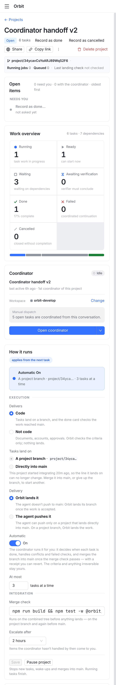
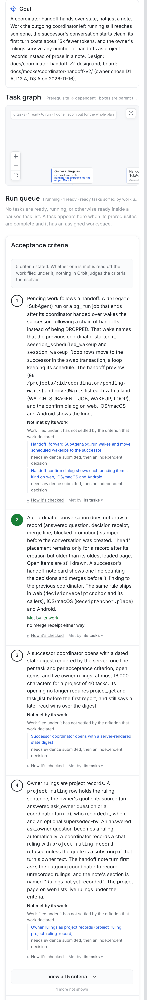
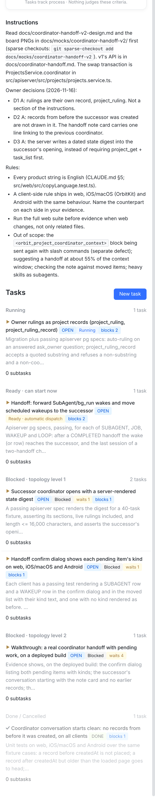
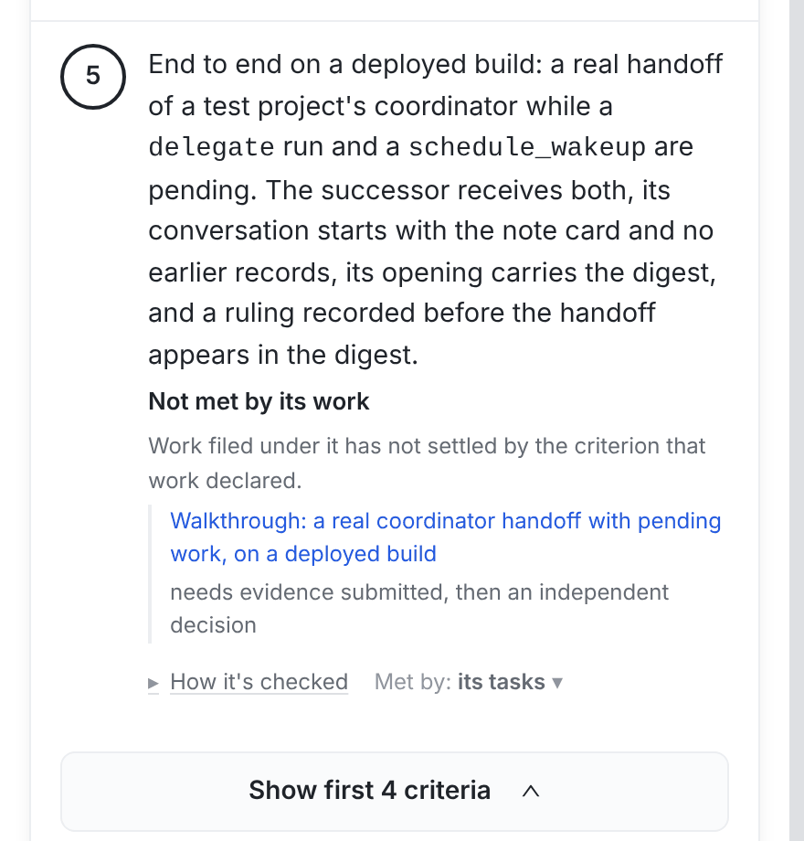

左：真实 web 页面，手机宽度 440 px 下截取（当前 HEAD 830d3deb6 的构建，ui-migration fixtures 加上这个项目的真实读数：orbit project get 34ycavCsYoARJ89WqS2F6 与 task list --project-id，读于 2026-11-16 17:40 UTC）。
中：iOS 今天（ProjectsView.swift 的 ProjectDetailView，iPhone 和 Mac 共用，分段顺序固定在 OrbitKit/App/ProjectPageListLogic.swift:6-20）。
右：建议。结构以 web 手机版为准，一一对应；iOS 只借控件样式（inset-grouped List、Toggle、Stepper、⋯ 菜单）。
手机按 Pro Max 440 × 956 pt 画，红虚线是首屏底。黄底 = 真实读数里拿不到、跟 web 截图用的是同一份桩数据的值。

openItemsAttention PV:779 只在有事时出现），只剩工具栏的 “Open items 0” 按钮。web 这一段始终在，里面有一行 “Record as done… · not asked yet”。ProjectRunSettings.tsx:416 project-run-settings-summary；iOS runSettingsSection PV:1415 第一行直接是 Delivers）。ProjectDone.notAskedYet（OrbitKit ProjectDone.swift:704）里已经有同一个词。工具栏按钮保留，作用是从页面任何位置一键跳到这里（见待定 D3）。RUN_AUTOMATIC、RUN_LINE_PROJECT_BRANCH、shortBranch、runTasksAtATime，在 lib/projectStart.ts；OrbitKit RunSettings.parts 也已经有同一组词，在 StartProject.swift:1236）。web 的下半依次是：Goal → Task graph → Run queue → Acceptance criteria（手机上先显示 4 条，再加 “View all 5 criteria”）→ Instructions → Tasks（按段分组）。iOS 今天是同样的顺序：ProjectPageListLogic.rows 的 goal, graph, blockers, runQueue, criteria, instructions, tasks, crossings。其中 Blockers 和 Crossings 两端都是空就不画，这个项目 blockers.open 为空，所以两端都没有这两段。


landingReason 是 IN_FLIGHT（正在落地），但两端都写 “Met by its work · no merge receipt either way”。原因是 landing 为 UNKNOWN（web ProjectAcceptanceCard.tsx:268；iOS ProjectPage.swift:933），iOS 的 ProjectCriterion 根本没有 landingReason 字段（Models/ProjectDetail.swift:54-75）。runStalled: true，后台作业 10 分钟以上没有输出。web 只在 Task graph 的节点上写 “Running · Background job · no output 10+ min”（projectDependencyGraph.ts:212-219），两端的任务行都只写 “Running”，iOS 上哪里都看不到。autoRunWhenReady: false，要手动开始，两端任务行都只写 “Blocked · waits 4”，看不出它解锁后也不会自己跑。derivedDone.criteria[].landingReason：IN_FLIGHT 写成 “Met by its work · In flight”。用词复用 ProjectDone.landingReasonLabel（iOS ProjectDone.swift:838-848 = web landingReasonLabel，projectDone.ts），Done 卡片已经在用这组词。web 和 Android 一起改（待定 D2）。没满足的判据照旧，不显示落地（判据 5 就是这种情况，见第 3 张）。| # | web 手机版（截图） | iOS（ProjectDetailView） | 状态 |
|---|---|---|---|
| 1 | 标题区：标题 · Open · 6 tasks · 动作按钮 · 集成线一栏 | header() PV:672，动作在 ⋯ 菜单 PV:2514，集成线 PV:724 | 控件不同，内容相同 |
| 2 | Open items（0 need you · 0 with the coordinator；Record as done… not asked yet） | openItemsAttention PV:779：没事时不画 | 缺 → ② 1 |
| 3 | Work overview（6 tasks · 7 dependencies，格子 + 进度条） | overviewSection PV:1170 | 格子：web 把 0 的也画出来，iOS 只画非 0 的附加格 |
| 4 | Coordinator（Idle · Workspace · Manual dispatch · Open coordinator ▾） | coordinatorSection PV:1278 | 对应 |
| 5 | How it runs（Automatic On 摘要 → Execution → Integration → Escalate → Pause） | runSettingsSection PV:1415，多一行 Main branch | 缺摘要 → ② 2 |
| 6 | Goal | goalSection PV:1831（折叠到 132 pt + More） | 对应 |
| 7 | Task graph | graphSection PV:1858 | 对应 |
| — | Blockers（空则不画） | blockersSection PV:1871（空则不画） | 对应 |
| 8 | Run queue（1 running · 1 ready） | runQueueSection PV:1954 | 对应 |
| 9 | Acceptance criteria（先显示 4 条，View all 5 criteria） | criteriaSection PV:2090（compact 先显示 4 条） | 已满足那行的落地说法 → ② 3 |
| 10 | Instructions | PV:2361 | 对应 |
| 11 | Tasks（Running / Ready / Blocked by level / Done 分段） | tasksSection PV:2376，分段文案 ProjectPage.swift:1335-1345 | 对应 |
| — | Crossings（空则不画） | PV:2460 | 对应 |
PV = src/macos/OrbitApp/Sources/OrbitApp/Views/ProjectsView.swift。Android 的项目页不在这次范围内，但每条改动的「三端协同」一栏都写了 Android 要跟着做什么。
| 决定 | iOS 惯例 | Orbit 一致性 | 三端协同 |
|---|---|---|---|
| 1Open items 常驻 | inset-grouped List 里多一个 Section，表头加 detail，与其他段写法相同（sectionHeader PV:2653）。工具栏按钮继续当快捷入口。 | 空的时候也说 “0 need you”，用户就知道页面查过了而且什么都没有，不会以为这段没加载出来；“not asked yet” 已经是 OrbitKit 里的词。 | web 手机版有这一段，iOS 不能缺。Android 项目页跟 iOS 走（memory：Android 默认跟 iOS）。 |
| 2How it runs 摘要行 | 设置类 List 的首行放一句总述，就像 iOS 设置里 “Wi-Fi 开 · 网络名” 那种写法；只读，不点。 | 与开始卡、开始回执、Project started 卡用同一组词（runSettingsParts / RunSettings.parts），用户在四个地方看到的是同一句话。 | web 有（project-run-settings-summary），iOS 没有，按 web 补上。 |
| 3已满足判据的落地原因 | 不加新控件，只换一行里的半句话。 | 页面和 Done 卡片对同一条判据说同一句（今天页面说 “no merge receipt either way”，Done 卡片说 “In flight”）。 | web 的 ProjectAcceptanceCard、iOS 的 criterionWork、Android 三端一起改，iOS 模型要先加 landingReason 字段（待定 D2）。 |
| 动作收进 ⋯ | iOS 导航栏右侧放 ⋯ 菜单，危险操作单独放在菜单底部。 | 菜单里的项和 web 的按钮一一对应，名字相同。 | 不是缺分段，只是控件不同。 |
读于 2026-11-16 17:40 UTC。和 brief 写的数已经不一样了：判据 2 现在已满足（landingReason IN_FLIGHT），1 个任务 DONE、5 个 OPEN（brief 写的是 6 OPEN、0 met）。原因分布是 IN_FLIGHT ×1、NO_RECEIPT ×2、NO_BRANCH ×1、CODELESS ×1（brief 写的是 NO_BRANCH ×2）。maxConcurrentTasks 3、PROJECT_BRANCH、merge check 三项和 brief 一致；blockers.open 为空。
landing: LANDED + landingReason: CODELESS，同时 satisfied: false。它的唯一任务（Walkthrough）还是 OPEN、BLOCKED、从没跑过。
landing == "UNKNOWN" 算进 “with no merge receipt”（PV:2631），判据 5 就从这个数里消失了。屏上显示 “5 stated criteria · 1 settled … · 4 with no merge receipt”，读起来像有一条已经落地。web 的 Done 汇总写 “1 no code to land”。counts.landed = 1 指的就是它。

projectDone.ts REASON_LABELS），判据 3 是 NO_BRANCH，会写成 “1 ran without a branch”。可这三条的任务一条都没跑完，有的还是 BLOCKED。和 G1 是同一类问题。runStalled: true（runningLabel：“Running · Background job · no output 10+ min”）只出现在 web 的 Task graph 节点上。两端的任务行和 Run queue 都只写 “Running”，iOS 上哪里都没有，OrbitKit 也没读 runStalled。autoRunWhenReady: false，只有 Project started 卡上写了（“1 task is set to start by hand…”）。项目页两端只写 “Blocked · waits 4”。它解锁以后，iOS 会写 “Ready · can start now”（ProjectPage.swift:1234），可在那之前看不出来。project integration 返回 403 INTEGRATION_READ_NOT_PROJECT_SESSION。Work overview 的格子来自 /panorama，我拿不到，是按 task_list 推算的。这两处在两边用的是同一份桩数据（黄底），只用来对齐结构，不能当真实读数。
按时间排：① 判据决定的回执（web 用橙色）→ ② 开始项目的回执（蓝色，“You started the project on 5 criteria at seal 7219d1bad212”，开始于 2026-11-16 15:45:31Z，图上按 UTC+8 显示为 23:45）→ ③ Project started（开始后 9 秒送到协调会话，原文 “From Orbit · project started”，15:45:40Z）。
宽度：手机上三张卡都占满会话栏宽度。桌面 web 上，Project started 卡封顶 720 px（.psc { max-width: 720px }，index.css:24754）。两张回执现在没有封顶，另一条分支上有个还没提交的修复，会把它们也封到 720。到了手机上，会话栏本身窄于 720，三张卡一样宽：iOS 的 orbitCardWidth() 是 maxWidth 720（SessionMessageCardView.swift:259-263），回执是 maxWidth: .infinity，两边都扣 rowInsets 16（ConsoleView.swift:1481-1487）；Android 的 Project started 是 widthIn(max=720.dp)。
CriteriaDecisionReceipt（CriteriaDecisionCard.tsx:1143）、AcceptanceConfirmationReceipt（AcceptanceConfirmationCard.tsx:587）和 ProjectStartedCard（:103-169），样式只用 src/web/src/index.css。
颜色：橙色卡是 --warning-bg #fff4e6 / --warning-border #ffd591，勾是 --success #1a7f37；蓝色卡是 --brand-tint #eaf1ff / --brand #3370ff；Project started 卡是 --brand-tint + --brand-border #bcd3ff。
.criteria-provenance 的橙色，蓝卡上挂着橙标。这是 web 自己的问题，不影响 iOS。
CriteriaDecisionReceiptCard，ApprovalCards.swift:2735 tone: .green），web 是橙色。另外 web 的折叠 “What this approved · …” 没有移植。CriteriaDecision.swift:1384，RunSettings.parts）。时间不同：iOS 不是当天时会加日期，写 “by you at 11/16 23:45”（OwnerConfirmations.receiptTime，OwnerConfirmation.swift:1075）；web 永远只写 “23:45”（receiptClock）。ProjectStarted.swift:128-199），色调是 accentColor，圆角 8。.approvalChrome(.orange)，勾仍然是绿色字），和 web 的 .criteria-decision 同色，也和你在会话里看到的「橙色那张」对上（待定 D1）。SettledDiff / SettledProposal 相同；拒绝时写 “What this refused”。同一张卡上的 “What the coordinator was told” 本来就是 iOS 的 DisclosureGroup，照它的样子做。Android 今天（三端协同）：三张卡都还没移植。判据回执和 Project started 都是通用的字段卡（CardModels.kt:256、TranscriptCards.kt:51），开始回执画成一张变暗的 “When is this project done?” 预览（CardPreviews.kt:75-83），没有 “set to start by hand” 那一行，也没有任务列表。建议另开任务，按 iOS ② 的样子移植。
landing 还是 landingReasonreceiptClock，三张回执都会受影响。RunSettings.parts）。